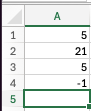
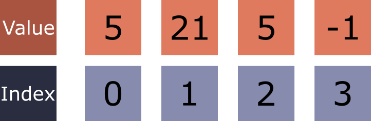
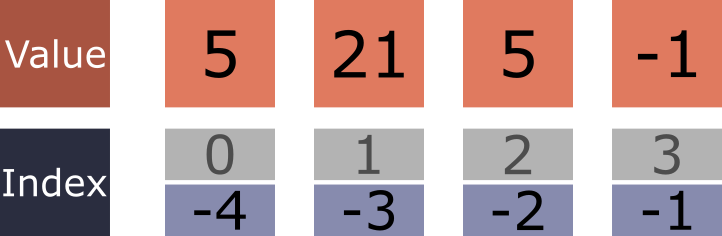
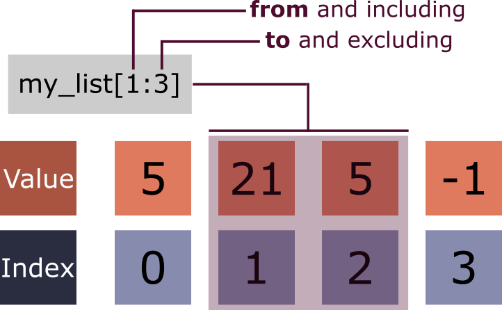
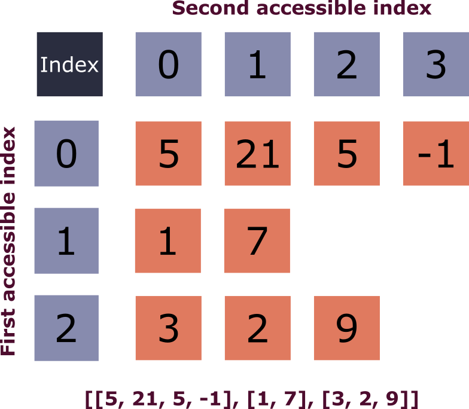

Learning Objectives
Introduction
As explained in the introduction, Python natively contains many data structures for storing multiple values. However, what are the benefits of collecting your data points together? When working with related data points, such as multiple experimental recordings or sample IDs, handling each value individually becomes tedious. To address this, we use data structures, of which one is a list.
Lists are a core object in Python with many of the learned components applying to other structures. You may therefore find that this section is quite lengthy. Subsequent sections that cover other data structures - namely tuples, sets and strings - will be shorter.
What are lists?
Lists are one of the most common data structures in Python, providing a flexible structure that can hold mixed data types. It is therefore important to understand how they work, how we can use them, and the features they offer to our advantage.
The easiest way to imagine how a simple 1-dimensional list works, is to think of it as a numbered list in your laboratory notebook. Each line can record a different measurement, observation or sample identifier, in sequential order. For instance, suppose you have four entries in your notebook, each recording different experimental values:

The number of entries or items in a list determines its length. The above list of results has four entries; therefore it is said to have a length of 4.
Lists: One of the most common data structures in Python, providing a flexible structure that can hold mixed data types in square brackets [], separated by commas.
Item / Element: An individual value stored within a data structure such as a list. Also referred to as an item.
If you have had any experience programming in other langauges, the term array is one that may be familiar. An array is a data structure that stores a collection of items, typically of the same data type, in an ordered and indexable sequence. We are introducing this term here, as it is one you may have encountered before. The term array is, in many ways, an overhang from older programming langauges, and is used to describe an ordered collection of items of the same type, but in Python it’s not actually a built-in structure — lists serve a similar purpose, while true arrays are provided by libraries like NumPy, which we will encounter more in the next module.
In additition to lists, the Python ecosystem includes external packages, and one such popular package that we will use throughout our course, is NumPy. NumPy provides its own data structure type known as the NumPy array. NumPy arrays are especially useful for mathematical operations, as they support fast, item-wise computations and are optimised for performance. Unlike regular Python lists, NumPy arrays store data more efficiently and in a fixed type, making them well suited to numerical applications. However, a lot of the concepts behind lists are applicable to NumPy arrays. We will explore the differences between NumPy arrays and lists later in the Data Handling module of the course, but they are worth mentioning at this stage, due to their importance in mathematical and scientific computing.
Creating Lists
Lists store multiple items in square brackets [], separated by commas. This can be created by placing square brackets [] around your comma-separated data or by using the list() function.
Using square brackets [] is the most common method when creating a new list. Alternatively, it is possible to force another data type into a list by feeding it into the round parentheses of an in-built class: list(). However, there is no official consenus that specifies that one way to create a list is preferable over the other.
1.
Create a list called fibonacci with these numbers - 0, 1, 1, 2, 3, 5, 8, 13, 21, 34:
- Use both
[]andlist()
List characteristics
Some programming languages insist that all items in a list must be of the same data type, but not in Python. We can mix strings, integers, floats. We can even have functions, other lists, and more. If it's an object in Python then it can be stored in a list.
As shown when counting our list of entries, the number of items in your list determines its length. To find it programmatically we use the built-in function len().
You may remember len() from the previous lesson being used to find the number of characters in a string. This is because len() can be used in multiple circumstances to find the length of an object, all that is required is the object must be a sequence or a collection (data structure).
What is an object in Python?
In Python, everything is an object, every piece of data you work with. An object is simply a container that holds data along with built-in capabilities (methods), which we'll explore later in this lesson. This len() works with all data structures - they're all objects that Python knows how to measure.
This is why you may hear of Python described as Object-oriented programming.
As you can see in the cell above, the len() function will return an integer value, as it is a discrete count of the items in the list. This value will always be equal to, or greater than zero, with zero being returned for an empty list (a common occurrence!). This returned value can be stored in a variable to be used in the future, such as the mathematical operations, conditional statements or logical conditions you learned, previously.
2.
You're analysing PCR amplification results from a 96-well plate experiment. You tested 12 different samples to check if your target DNA fragment is present. Each sample should produce a detectable PCR product if the target sequence is successfully amplified. The results are stored in a list: pcr_products.
- Use the
len()function to check how many PCR products you have - Write a conditional statement that prints "Run complete." if you have exactly 12 products, or "Incomplete run - missing samples." if you have fewer than 12
Indexing: accessing specific items
The fundamentals
Now that we have our data inside a list, we might want to access individual or multiple items within our list.
Each item inside a list has a specific position, termed its index, which is a whole number or integer, starting with 0 which references the first position. Each subsequent character index then increases by a value of 1. We can visualise this as follows:

Index: The position of an item in a list. In Python, indexes are numbered starting from 0 for the first item.
Why 0 and not 1 for indexing?
This is because Python, as a coding language, uses zero-based indexing as the method for finding the first item. This was chosen due to its memory efficiency and continuation from other coding languages like C.
Now that we know the positional value (index) of each item, we can use that index to retrieve it from a list.
Given a list stored in the variable my_list, we can access an item by writing the variable name, followed by the index value, inside a pair of square brackets [].
The retrieved item can then be saved to a new variable.
Use the code cell below to experiment with indexing into the my_list list object:
You cannot access values beyond the end of the list; this will result in an error. Python reports an IndexError if we attempt to access a value that doesn’t exist. This kind of error is called a runtime error, as it is detected when the Python file is executed, not parsed.
When a Python script runs, the first task that the interpreter performs, is parsing - which is where it checks through the entire structure of your code, making sure that there are no syntax errors raised. Once this stage has been successfully completed, the interpreter then runs the code, line by line: and it is at this stage when a runtime error (like IndexError) can be raised.
Negative indexing
In scenarios where you might have a long list and wish to access items at, or near to, the end of that list, it is sometimes more convenient to index an array, backwards — that is, to reference the members from the end of the list, first. This is termed negative indexing.
For example, we could have automated sampling of data from an experiment, and it may be that you are only interested in the most recent recording to check that everything is running correctly. If your list is, say, 124 items in length, it might be cumbersome to access the list using exp_data[123]. In such example, using negative indexing provides a cleaner and easier way to access the last value: exp_data[-1]. It's easier to write than other alternatives such as exp_data[len(exp_data) - 1], which relies on the len() function in order to retrieve the last item in the list.
The following diagram displays a list with numbers in it, and shows both the positive and negative index of each item.

Use the following code cell to play around with positive and negative indexing:
3.
You have the following pH readings from a fermentation experiment: [6.8, 6.5, 6.2, 5.9, 5.7, 5.4]:
- Print the first pH (using positive indexing)
- Print the second to last pH (using negative indexing)
Obtaining an item's index from its actual value
Often, you will be working with a large list: one where you cannot know the position of a particular value that you might be looking for. For this situation, where we know the value but not its index, we can use the method .index().
Method: A method is a function that is attached to a specific object, and defines behaviour that is associated with that object. Methods are called using dot notation in Python, by typing a . directly after the object, followed by the method name with rounded brackets (). We'll encounter more methods further in this lesson.
In lists with duplicated values, if a value appears more than once, the index that is returned will correspond to that value's first occurence.
A handy feature of the .index() method is that it will raise a ValueError when the value does not exist in the list. You can use this as a method to query large lists for wanted information. These errors were also introduced in the PF1 lesson.
Slicing: accessing multiple specific items
You can also retrieve more than one value from a list at a time, using a mechanism called slicing. To slice a list you use square brackets [] directly after the variable storing your list: my_list[]. Slicing extracts portions of lists using a [start:end] notation, where start and end are integers, separated by a colon.
A slicing behaviour that is very important to note is:
- A
startindex is inclusive (the value at that position is included). - An
endindex is exclusive (the value at that position is not included).
The diagram below helps to visualise this for more clarity:

If we want to retrieve all the values from the first index, it can be written in either of two ways: my_list[0:3] or my_list[:3] with the latter being more commonly used. The start index (0, in this case) is done away with entirely, with Python's interpreter implicitly treating this as meaning 'all items up to' to the stop index.
The same is also true in reverse, when you wish to return all the values from a certain point in your list, all the way to end of that list. Namely, the start index is given, and the end value is left out.
These principles can also be applied to negative indices, resulting in negative slicing, as follows:
In the code cell below, feel free to experiment with slicing into lists.
Python also provides a slice() function that creates reusable slice objects. This is particularly useful when you need to apply the same slice pattern to multiple lists or when the slice parameters need to be calculated programmatically.
As well as a start and end index (given as integers), you can also give it a third input argument: step. This directs slice() to skip values, only returning every 2 or 3 values in your slice, for example.
Let's create a new list, with a few more items in it, and slice into this using the slice() function, to obtain the first 6 items in this list:
And now run the cell below, which operates over the same 6 items, but skips every second item from its returned output, by the provision of 2 as the step argument:
4.
You're studying bacterial growth over time and have collected optical density measurements at regular intervals. The data shows the classic bacterial growth curve with different phases. Your growth data is stored in the cell below as growth_data:
- Extract the early phase (first 4 measurements)
- Extract the late phase (last 3 measurements)
- Extract the exponential phase (measurements 3-7)
Mutability
A key property to consider in differing data structures is their mutability; that is, the capability of that data structure being changed, once it has been created. Lists are an example of a mutable data structure, and can therefore be modified in situ (in place) by adding, removing, and altering the items stored within them. This is done via built-in Python methods associated with list objects.
Mutable: a data type that can be changed after creation. You can modify the contents directly without creating a new object.
We can reassign an item in a list through indexing, and casting a new value using hte assignment operator: =
It is also possible to perform the reassignment over a slice containing any number of values. The replacement values must be of the same length as the slice they are replacing.
Mutability of list members
As discussed at the start of this lesson, lists can contain any Python object. Each object will have a data type, and a useful feature of Python lists is that they can contain multiple data types within a single list. As a result, each type will be subject to its own properties and mutability.
Methods
As we briefly mentioned earlier, methods are special functions associateed with an object using dot notation. Each specific data type in Python will have its own suite of methods available to it. You can think of a method as a tool that is permanently attached to a particular type of object, such as a list, string or an integer.
The key difference when comparing methods to functions is that methods are dependent on their object; they cannot be called independently. To call a method, we use dot notation . in Python, appending the method to the object using its name. I.e. my_list.append(5), my_list.index(3).
Types of methods
Methods can be separated into two general categories:
- Operations that return a result without modifying the original object.
- Operations that modify the original object, but do not return anything.
Adding to (and combining) lists
One useful feature of lists is the ability to add new items to them. There are two common built-in Python methods for this .append() and .insert(). Both of these methods operate in situ, modifying the original list.
As with two strings, the + operator can also be used to add one list to another via a process called concatenation.
.append()
The Python method .append() can be used to add items to the end of a list. If that item is a collection like another list, the entire collection is added as a single item, rather than merging its contents.
When you have a list stored within another list as an item or item, we call the outer list a nested list. The inner list is referred to as a sublist, and will appear as a comma-separated item inside the outer list, and will be wrapped in square brackets [].
The method .insert() gives you more control than .append(), allowing you to dictate the index position you want the new value to be. Due to this, the method takes two arguments, the first being the index, and the second the value.
Adding a new item one at a time for multiple items can be time consuming and inefficient. If you have lots of new data, it is most efficient to add all the new data in one go, combining one list with another, or concatenating them. For this you can use the + operator, which will return a new object unlike the previous methods.
5.
You're recording behaviours observed during a primate study. You have a list of morning behaviours saved to the variable morning_behaviours:
- Use
.append()to add 'vocalising' to the end of the list - Use
.insert()to add 'socialising' at position 1 (second position) - Create a new list called
afternoon_behaviourscontaining['playing', 'territorial_display'] - Use the
+operator to combinemorning_behavioursandafternoon_behavioursinto a new list calledall_behaviours
Removing items from a list
It is also necessary to remove items from a list, from time to time. For example you might want to drop a feature from your dataset. As with .append(), we have two options depending on our needs: .remove() and .pop(). Both operate in situ, modifying the list.
The method .pop() does the same, but instead of only acting in situ it will also return the value too. Rather than giving the value, .pop() takes the index position.
There is also a third method to remove an item DEL. Although it is not commonly used.
6.
Using the list you created in an earlier PRACTICE EXERCISE, morning_behaviours:
- Use
.remove()to remove 'vocalising' from the list - Use
.pop()to remove 'territorial_display', and save it as a new variable
Other useful methods
Python's list type has many helpful methods beyond just adding and removing items. Below are some other commonly used methods used on lists:
Count specific values: The .count() method tells us how many times a particular value appears in a list. This is particularly useful for analysing the frequency of an item in your data.
Extending lists: The .extend() method adds all items from one list to another, and retains the item designation in the destination list. For instance, unlike .append() which adds the entire list as a single item, using .extend() adds all items to the list as individual items. And unlike using the + operator, .extend(), modifies the original list in situ.
Sorting lists: The .sort() method sorts items in ascending order, by default. Use the optional argument and set its value to reverse=True, for descending order.
7.
You're analysing enzyme activity data from multiple assays. Your data contains some duplicate readings that you want to count, and you need to sort the results. Using the enzyme_activities list:
- Count how many times
85appears in the data - Create a sorted version (ascending) of the data
- Create a reversed version of your original list
Membership testing
Often we need to check whether a specific value exists in our dataset. Python provides the membership operator keyword in for membership testing, which returns the boolean True if a value is found in the list, and False if not.
We can also use not in to check if a value is not present in the list:
Membership testing also works with conditional statements, making it easy to create decision logic based on your data:
Case Sensitivity: Remember that string comparisons in Python are case-sensitive. 'Gene' and 'gene' are considered different values. This is particularly important when working with biological nomenclature where case often matters (e.g., gene symbols vs. protein names).
References and copies
One of the most important concepts when working with mutable objects like lists is understanding the difference between references (also called aliases) and copies. This becomes crucial when you want to preserve your original data whilst performing modifications. It's good practice in data exploration/analysis to keep your original data unmodified in a variable for easy access.
Reference: An alias created when you assign one list variable to another using =. Both variables point to the same list object in memory, so modifying one affects the other. For example, if backup_data = original_data, then backup_data is a reference to original_data, not a separate list.
Copy: An independent duplicate of a list created using methods like .copy() or slice notation [:]. Changes made to a copy do not affect the original list, making it essential for preserving experimental data whilst performing modifications. For example, treated_samples = control_samples.copy() creates a true copy that can be modified independently.
References (Aliases)
When you assign one list variable to another using =, you're creating a reference, not a copy. Both variables point to the same list in memory:
If we were to modify a new reference, the original will also be changed.
Creating True Copies
To preserve your original data, you need to create a proper copy. Python provides two main methods:
Now modifications to one list won't affect the others:
The aforementioned versions of copy are called shallow copies. A shallow copy creates a new list, but the items in the new list are still references to the original items. If those items are mutable, such as being a list itself, then changing them in the copy will affect the original.
A true deep copy requires use of the copy.deepcopy() function from the copy module.
Nested Lists
As you have seen throughout this section, lists can contain any data type and even mixed data types. This extends to other data structures, such as lists themselves. A list that includes at least one item that is, itself, a list is referred to as a nested list. The inner list, stored within the nested list, is referred to as a sublist.
Nested: A data structure that contains other data structures of the same type within it. In the context of lists, a nested list is a list that contains other lists as its items, creating a multi-dimensional structure similar to a table with rows and columns. The diagram below helps to visualise this concept.

Creating nested lists
Think of nested lists as being like a table with rows and columns, where each row is a separate list:
Accessing items in a nested list
To access items in nested lists, use multiple square brackets []. The first index selects the row, the second selects the column:
Modifying nested lists
You can modify items in nested lists just like regular lists:
8.
You're analysing gene expression data from a cancer research study. The data is organised as a nested list where each row contains [gene_name, control_expression, treatment_1_expression, treatment_2_expression]. Using the gene_expression data provided:
- Print the expression levels for the TP53 gene (second row)
- Calculate and
printthe fold change for MYC gene comparingtreatment_1to control (treatment_1÷control) - Update the BRCA1
treatment_2value to 2.1 (it was incorrectly recorded) - Add a new gene
'EGFR'with expression levels[3.5, 5.2, 1.8]to the end of the list
Nested lists as matrices
A list where at least one of the items is not a list, is considered a one-dimensional (1-D) list. A list can be considered two-dimensional (2-D) when all of its items are lists of another data collection type, themselves. If the internal data lists are all of different sizes, it is called a jagged list. The opposite, where all lists are of the same size, would be called a matrix.
Matrices are important structures in mathematics and machine learning, as they provide a standardised way to represent and manipulate data in tabular form. Their rectangular structure allows for efficient mathematical operations such as matrix multiplication, transposition, and item-wise calculations. It is therefore important that we introduce them, early on.
The implementation of a matrix is identical to other nested arrays. However, there is a visually appealing way to do so by offsetting the outer brackets of the list:
In future modules we would create this matrix using a NumPy array, a list-like object made specifically for numerical calculations using the popular mathematical / scientific Python library, NumPy.
Summary
In this section, we learned about Python lists, one of the most fundamental and versatile data structures for storing collections of data. We explored how to create lists using square brackets [] and their key characteristics: they are mutable, can hold mixed data types, and use zero-based indexing.
Lists are the backbone of many data analytics pipelines, so understanding how to get the most out of them is crucial for future learning. Although there is a lot to learn, try to remember roughly some of the possible methods and operations, in the interest of facilitating you looking these up, later on. As with much of the course, please consider this a valuable reference material for your Python programming journey, going forward.